리틀핑거 STYLE GUIDE잉크 & 블록
리디자인 스타일 가이드
2026-09-06 확정 시안 1a(45° 하드 섀도) 기준. 기존 "파스텔 × 잉크 & 스티커" 토큰 계약(design-reference/styles/tokens.css) 위에 값을 바꿔 얹는다. 토큰 이름은 유지하고 값만 교체하므로 apps/mobile/src/theme/tokens.ts와 apps/web/src/styles/tokens.css에 동시에 반영한다.
1 · 원칙
01 · 잉크 한 획
모든 면은 잉크 테두리로 닫는다
카드·버튼·칩·입력·시트 모두 2 / 2.5px 잉크 선. 헤어라인이나 연한 회색 테두리는 쓰지 않는다. 글자는 항상 잉크, 색은 배경에만.
02 · 45° 블록 그림자
그림자는 흐림 없는 잉크 블록
오른쪽 아래 45°로 5px(카드·CTA) 또는 3px(칩·작은 버튼). blur 0, 색은 잉크 100%. 누르면 그림자 방향으로 3px 이동해 "눌린" 느낌을 낸다.
03 · 4색은 역할
옐로·민트·핑크·스카이만
옐로=브랜드·선택 / 민트=진행·완료 / 핑크=마감·응답 필요·벌칙 / 스카이=기록·보상·변경. 채도를 올렸을 뿐 역할은 기존 D7 규칙 그대로. 빨강은 오류 전용.
04 · 기울기 폐지
스티커 틸트는 쓰지 않는다
-0.8° / -1.2° 회전 대신 카드 밖으로 살짝 겹치는 태그(배지)로 "붙인" 느낌을 낸다. 마스코트는 기존 E-1 그대로 — 동그란 얼굴 + 두 새끼손가락이 맞닿는 C-1 루프. 유기적 블롭은 정원(999)으로 바꾸고 2.5 잉크 + 5px 그림자.
05 · 불변 규칙
DESIGN.md §8은 그대로
48dp 터치 타깃, 상태는 색+텍스트 병기, 의견 불일치는 판정 암시 금지(양측 동일 무게·종이 톤), 디스클레이머 문구 불변, 광고 슬롯 비활성 시 공간 없음, 카카오·Google 공식 버튼 색.
06 · 헤더
화면 상단은 항상 "필 헤더"
홈은 마스코트 + 워드마크 + 메뉴, 하위 화면은 사각 뒤로 버튼 + 제목 + 액션. 흰 필, 2.5 잉크, 5px 블록 그림자. 종·아바타는 메뉴 안으로 들어간다. 예외: 온보딩(A00)·로그인(A01)은 기존 기준선 그대로 유지한다.
2 · 색
3 · 타이포그래피
Pretendard 단일 서체(ADR 0014). 무게는 500 / 600 / 800 / 900 네 단계로 줄였다 — 700은 800으로 올린다. 큰 제목은 자간을 더 조인다. 한국어는 word-break: keep-all.
--lf-type-wordmark-size 22 (A01 큰 워드마크는 40)--lf-type-display-size--lf-type-headline-size--lf-type-title-size--lf-type-card-title-size--lf-type-sheet-title-size--lf-type-stamp-size--lf-type-body-lg-size--lf-type-body-size--lf-type-label-size--lf-type-chip-size--lf-type-meta-size--lf-type-eyebrow-size4 · 선 · 모서리 · 그림자
BORDER · 테두리
--lf-border-chip--lf-border-card / outline / sheet 통일--lf-border-dashedRADIUS · 모서리
--lf-radius-xs--lf-radius-sm--lf-radius-md / lg / xl 통일--lf-radius-hero--lf-radius-pillSHADOW · 그림자 (blur 0 · 잉크 100%)
--lf-elevation-card / fab--lf-elevation-sm (신설)5 · 컴포넌트
APP BAR · 필 헤더 .lf-appbar
margin 8 16 0 · 52h · 2.5 잉크 · 5px 그림자. 홈: 마스코트 원 34(옐로) + 워드마크 22/900 + "메뉴 ☰"(미읽음 핑크 점). 하위: 사각 아이콘 버튼 36 r10(터치 48 보장) + 제목 16/800 중앙 + 우측 액션(버튼 또는 상태 칩). 웹(카톡 인앱)은 브라우저바 유지, 아래 콘텐츠만 적용.
BUTTON .lf-btn
filled: 잉크 56h r14 + 옐로 사각 40 r10(아이콘 22). outlined: 종이 50h 2.5 + 3px 그림자. kakao/google: 공식 색 유지, 형태만 r14. tonal: 옐로 36h. text: 밑줄. disabled: opacity .3, 그림자 없음. 필(pill) 버튼은 폐지 → 모두 r14.
CHIP · TAB .lf-chip .lf-tab .lf-choice
필터 탭 34h r10, 선택=옐로+3px 그림자·800, 비선택=종이·700 잉크(보조색 폐지). 상태 칩 28h r8 톤 배경·글자 잉크. 선택 칩(카테고리·지킬 사람) 36h r10. 필 모양 칩은 없다.
CARD · ROW .lf-card .lf-card--list .lf-hero-card
월말까지
야식 끊기
지우 — 민준
매주 화·목 아침 러닝 같이 하기
진행 중 · 8/11 (화) · 지우 — 민준
CONTENT · 내용
flat 카드 — 그림자 없음. 읽기 전용·설정 묶음·읽은 알림.
히어로: 옐로 면, 상단 -14px에 겹치는 핑크 배지, 잉크 사각 화살표 46 r12. 행 카드: 40 r10 상태 타일(민트 진행·핑크 응답 필요·스카이 종료일 없음·뮤트 종결) + 제목 15/800 + 메타 12/600. 아이콘은 Material Symbols Rounded wght 500 유지 — RN에서는 LfIcon.
FORM .lf-field .lf-input .lf-picker .lf-switch
입력 48h r10 2px 종이, 그림자 없음. 포커스: 3px 3px 0 잉크(포커스 링 대체, 웹은 outline 2px #2F6FB3 병행). 피커(값 고르기 행)는 기본 3px 그림자로 "누를 수 있음"을 표시. 스위치 노브는 항상 잉크, ON은 옐로 트랙.
SHEET · STAMP .lf-sheet .lf-stamp

시트: 종이, 2.5 잉크(하단 열림), r20, 그림자 없음, 핸들 40×5 잉크. 세그먼트는 하나의 2px 박스를 세로선으로 나눈다. 스탬프: 틸트 없이 5px 그림자 + 모서리 파스텔 블롭(테두리 없음, overflow hidden). 손 루프(C-1) 애니메이션은 그대로.
6 · 약속 상태 ↔ 색 · 아이콘
7 · 모션 · 인터랙션 상태
translate(3px,3px) + 그림자 5→2 (3→0). 120ms
--lf-easing-standard. 색은 바뀌지 않는다. RN: Pressable style 함수로 transform·shadowOffset 교체.translate(-1px,-1px) + 그림자 6px. 반전 없음.
3px 3px 0 잉크 + (웹) outline 2px #2F6FB3 offset 3.
opacity .3, 그림자 제거. 문구는 이유를 말한다("재발송 — 만료 후 가능").
240ms
--lf-easing-emphasized-decelerate, 아래→위. 스크림 .42 페이드 동시.scale .92→1 + opacity, 400ms. 회전 없음(기존 lf-pop-in에서 rotate 제거). 손 루프 2600ms 유지.
8 · 개발 반영표 — tokens.css 값 교체
토큰 이름은 유지, 값만 바꾼다. 세 타깃(design-reference/styles/tokens.css · apps/mobile/src/theme/tokens.ts · apps/web/src/styles/tokens.css)에 같은 변경 세트로 반영하고 tokens.test.ts의 토큰 수·바이트 동일성·대비 검사를 의도적으로 갱신한다. 신설 토큰 2개(--lf-elevation-sm, --lf-type-appbar-size)는 카운트도 +2.
components.css / Lf* 변경 요점
.lf-appbar / LfAppBarmargin 8px 16px 0 · 종이 배경 · 2.5 잉크 · r999 · elevation-card.
--brand: 마스코트 34 옐로 원 + 워드마크 22/900 + 메뉴 버튼(종·아바타 액션을 메뉴 시트로 이동 — 라우팅은 유지, 진입점만 변경. PO 컨펌 항목)..lf-icon-button / LfIconButton36×36 r10 2px 종이.
--strong 없음. 앱바 밖(히어로 화살표)은 46 r12 잉크 채움 + 옐로 아이콘..lf-btn / LfButtonr pill → 14.
--filled 56h 2.5 잉크 테두리 + elevation-card, trailing 40 r10 옐로. --outlined 2.5 + elevation-sm. --kakao r14 + elevation-sm. .lf-fab은 좌우 16 풀폭 56h(중앙 필 폐지)..lf-chip .lf-tab .lf-choice / LfChip LfChoicer → 8(상태) · 10(탭·선택). 선택 탭 elevation-sm. 비선택 글자 잉크 700(
--quiet 보조색 폐지). --cream은 뮤트 배경으로..lf-card .lf-card--list / LfCard PromiseListRowr14 · 2.5 · elevation-card. 리스트 행 padding 14 16, 상태 도트 10 → 상태 타일 40 r10(
LfStatusDot → LfStatusTile, 아이콘은 status 매핑 §6). --tilt* no-op..lf-hero-card / LfHero옐로 배경, 회전 제거, 블롭+눈 제거 → 상단 -14 핑크 배지(eyebrow 텍스트), 잉크 사각 화살표 46. margin-top 10 (배지 공간).
.lf-sheet / LfSheetr 28→20, 2.5 잉크, elevation 없음. 핸들 40×5 잉크.
.lf-segmented: 단일 2px 박스 r10, 선택 옐로, 세로 2px 구분선..lf-stamp / LfStamp회전·pop-in rotate 제거, r14, elevation-card. 모서리 블롭은 테두리 없는 파스텔 면. 손 루프·스파크 유지.
.lf-input .lf-picker .lf-switch / LfInput LfPicker LfSwitchr12→10. 피커 elevation-sm. 포커스 elevation-sm(+웹 outline). 스위치 노브 잉크 고정, OFF 노브도 잉크.
.lf-outcome .lf-list-item .lf-settingsr14 · 2.5.
--reward 스카이 / --penalty 핑크 채도 상향(토큰). 설정 묶음은 flat, 행 구분 2px dashed #EFE9DC..lf-blob__* / LfBlobstroke-width 2.5 유지, 파스텔 fill은 토큰 따라 채도 상향.
--tilt 0.①
tokens.test.ts 카운트 +2, 바이트 동일성 재고정 ② 대비 검사: 4색 위 잉크 ≥ 4.5 ③ jest 롤·라벨 스냅샷 변경 없음 ④ 48dp 터치 (아이콘 버튼 36 + ::after) ⑤ DISPUTED 양측 동일 톤 ⑥ 광고 비활성 시 공간 0 ⑦ 디스클레이머 문구 diff 없음.